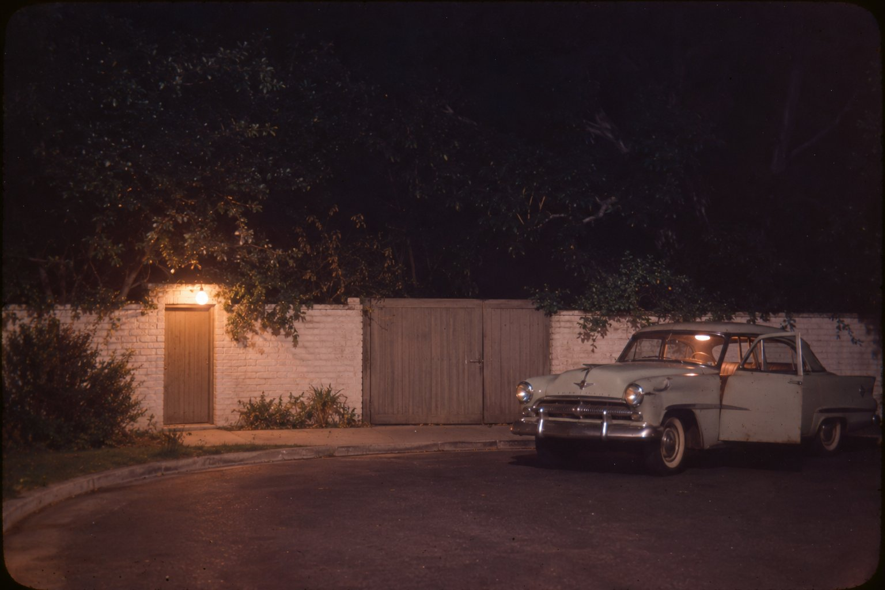

Перехват

Вы не против, если старуха постоит тут с вами немножко? Да не пугайтесь, я ничего не продаю и автограф не попрошу. Внутрь я не пойду, да и не пустят: дом теперь памятник, позапрошлым летом городской совет проголосовал за это единогласно, двенадцать рук из двенадцати, я читала в газете и, честно вам скажу, обрадовалась так, будто мне самой дали медаль. Мне хватит ворот. Ворота те же самые, деревянные, в крашеной кирпичной стене, и краска, по-моему, та же, только тогда я видела её в темноте, при одной лампочке над калиткой, а в темноте все стены белые.
Я была здесь один раз в жизни, в ночь с четвёртого на пятое августа шестьдесят второго года. Прошла через этот двор к двери, у которой в порог вмурована плитка с латинскими словами, вы её, наверное, видели на фотографиях, её все фотографируют. Отсюда её не видно, но я знаю, где она лежит, и знаю, какая она на ощупь, потому что в ту ночь я споткнулась о порог, грохнулась на колено и схватилась за неё ладонью. Она гладкая и холодная, даже в августе. Вот этого вам не скажет ни один экскурсовод.
Все, кто был той ночью в доме, давно на кладбище. Доктор Гринсон умер в семьдесят девятом, миссис Мюррей в девяносто четвёртом, доктор Энгельберг пережил их обоих, но в конце концов и он сдался. Осталась я, с палкой, со слуховым аппаратом, который мне выбирала внучка, и с коленом, которое до сих пор помнит этот порог, а может, просто ноет к дождю, кто его теперь разберёт. Журналистам я этого не рассказывала и не расскажу. Им нужна история с фотографией, а у меня не история, у меня долг, и отдавать его надо одному человеку, а не тиражу. Вы пришли посмотреть на дом, вы стоите рядом, у вас хорошее лицо и вы не торопитесь. Мне этого достаточно. Если устанете слушать, скажите, я не обижусь. В моём возрасте на это не обижаются, потому что некогда.
Начну с приюта, иначе вы ничего не поймёте. Я выросла в Лос-Анджелесском сиротском доме на Эль-Сентро-авеню, в Голливуде. Холлигроувом его назвали позже, когда перестроили, а в сороковые это был просто Сиротский дом: коттеджи на большом участке, общие спальни, по двадцать с лишним девчонок в каждой, и из окон нашей спальни была видна водонапорная башня студии «Ар-Кей-О» с буквами наверху. Меня привезли туда такой маленькой, что я не помню, откуда. Почти первое, что я там узнала, раньше даже, чем где умывальня, было то, что до войны в этой самой спальне жила девочка, которая потом стала Мэрилин Монро. Это знали все. Старшие показывали новеньким, какая кровать была её, и каждый год это почему-то оказывалась другая кровать, смотря кто показывал и кого хотел выселить. Говорили, что она лежала по ночам и смотрела на башню. Мы тоже лежали и смотрели. Башне, по-моему, было всё равно, она у всех одна.
Из приюта я вышла в пятьдесят девятом, и мне повезло, как везёт раз в жизни: меня взяли на телефонную станцию. Взяли, между прочим, потому, что в приюте я лучше всех писала диктанты и говорила «пожалуйста» без напоминания. На западе города, в Западном Лос-Анджелесе, Брентвуде, Бель-Эйре, связь держала не «Белл», как почти во всей стране, а своя компания, «Дженерал Телефон». До войны она называлась «Ассошиэйтед», и старые монтёры так её и звали до самой пенсии, назло начальству. Сначала я сидела на справочной, а через год меня пересадили на перехват.
Сейчас этого никто не помнит, так что объясню, вы уж потерпите. Когда вы набираете номер, которого больше нет, вам сегодня отвечает запись, вежливая, как гробовщик. А тогда запись была не везде, и на такой звонок отвечала живая девушка, то есть я. Вызов падал на наш пульт, загоралась лампочка, я втыкала шнур и говорила: «Перехват. Какой номер вы набирали?» Человек называл номер, я смотрела по карточкам и отвечала, что номер изменён, новый такой-то, запишите, пожалуйста, или что номер отключён и нового нет. На всё про всё полминуты. На каждом месте стоял счётчик, и старшая смены, миссис Ларкин, женщина с лицом как у почтового ящика, раз в неделю выписывала нам наши минуты на листок, как учительница отметки, и кто сидел на одном звонке дольше положенного, тот слышал про себя много интересного.
Ещё у нас было правило, которое нам прочли в первый же день, а потом дали подписать. Телефонистка не слушает, о чём говорят люди, не запоминает, не пересказывает и ничего по услышанному не делает. Это называлось тайной связи. За нарушение увольняли в тот же день, а если дело выходило наружу, могли и под суд отдать, потому что тайну связи охранял не только устав компании, но и закон. Нам рассказывали про одну девушку из Сан-Диего, которая позвонила в полицию по тому, что услышала на линии. Полиция приехала, потом приехал адвокат, и девушка, говорили нам, до сих пор работает в прачечной и гладит чужие рубашки. Правда это или нет, не знаю. Нам её рассказывали точно так, как в приюте рассказывали про кровать Мэрилин Монро, то есть с удовольствием и каждый раз немножко по-другому.
Ну вот, теперь про ту субботу. Четвёртого августа я работала вечернюю смену, с четырёх до полуночи. По субботам вечером звонков мало: люди уходят из дома, а кто остался, звонит тем, чьи номера знает наизусть, и не ошибается. Без четверти восемь загорелась лампочка. Я сказала своё «перехват, какой номер вы набирали», и в трубке засмеялись.
— Перехват, — повторил женский голос. — Как в кино про шпионов. Простите. Я набирала Аризону.
Аризоной называлась одна из станций Западного Лос-Анджелеса. Тогда номера начинались не с цифр, а со слова: первые две буквы названия станции соответствовали двум цифрам на диске, и люди говорили «Аризона», «Гранит», «Брайтон», как говорят про соседей. Она назвала номер, не заглядывая никуда, я это сразу слышу и сейчас бы услышала: так называют номер, который набирали тысячу раз, а потом много лет не набирали, и пальцы помнят его лучше, чем голова. Я нашла карточку. Номер стоял на Аризоне с довоенных времён, за эти годы у него сменилось несколько хозяев, последнего отключили в июле, и нового номера в карточке не значилось.
— Номер отключён, — сказала я. — Нового номера нет.
— А вы не могли бы поискать новый номер мисс Лоуэр? — спросил голос. — Мисс Аны Лоуэр. Она жила в Сотелле, в дуплексе. Она старенькая, у неё больное сердце, она могла переехать.
Голос был сонный и смешливый, немного медленный, как у человека, которого разбудили посреди хорошего сна и которому не хочется из него вылезать. Я сказала, что по фамилии номера даёт справочная и я могу её соединить, если она хочет. Справочная, конечно, тоже ничего бы не нашла, но справочная — это уже было не моё дело, а у меня, как вы помните, были полминуты и миссис Ларкин.
— Нет, — сказала она, подумав. — Не надо справочную. Она умерла в сорок восьмом году. Я знаю. Я просто набрала, понимаете? Лежала и набрала. Глупо, да?
По всем правилам я должна была сказать «что вы, мэм, ничуть» и отпустить линию. Полминуты к тому времени уже кончились. А я вместо этого сказала, что совсем не глупо, что я и сама иногда набираю номер одной женщины, которая в приюте выдавала нам по воскресеньям чистые ленты для волос, хотя у этой женщины отродясь не было телефона и номер я придумала сама. Зачем я это сказала, не спрашивайте. Это была правда, но правду на перехвате не говорят, на перехвате говорят «запишите, пожалуйста».
— В каком приюте? — спросила она.
Я сказала, что в Лос-Анджелесском сиротском доме, на Эль-Сентро.
Она замолчала так надолго, что я решила, будто она уснула. Потом заговорила совсем другим голосом, проснувшимся:
— Из окна спальни видно башню «Ар-Кей-О».
— Видно, — сказала я.
— А буквы на ней по ночам горели?
— При мне не горели. Говорили, что до войны горели.
— А мне казалось, что горели, — сказала она. — Может, я их придумала. Я на них смотрела. Меня привезли туда в тридцать пятом году, и я кричала в дверях, что я не сирота, у меня есть мама. Это была правда, только никому от неё не было легче, и мне тоже. Меня зовут Норма Джин. А вас?
Я назвала себя. Голос я к этому времени узнала, не думайте, что я совсем уж была дурочка. Вы скажете, его нельзя не узнать, и будете правы, только узнаёшь ведь голос из кино, из радио, тот, который поёт и говорит для всех сразу, а этот говорил с одной мной, ничем не был прикрыт и звучал так, как звучит голос женщины, которая лежит в темноте, укрывшись простынёй до подбородка. Узнать-то я его узнала, а поверить не могла. А когда поверила, решила так: раз она назвалась Нормой Джин, то и я буду разговаривать с Нормой Джин. Ей, наверное, так легче, и мне, честно говоря, тоже было легче, потому что с Мэрилин Монро я бы двух слов не связала.
Мы проговорили почти час. Я и сейчас могу пересказать почти всё, потому что потом много лет гоняла этот разговор в голове, как гоняют пластинку, пока не протрётся, только этот не протёрся. Сначала о тёте Ане.
Тётя Ана, рассказала мне Норма Джин, была тёткой её опекунши, давно разведённая, бездетная и христианская научница. Я понятия не имела, что это такое, и она мне объяснила: это такая церковь, где верят, что болезни и беды — заблуждение ума, что их нет, если правильно о них думать, и что в мире Бога человеку ничто не может повредить. Я тогда подумала, что в нашем приюте эта церковь прогорела бы за неделю, но вслух не сказала. Тётя Ана водила её по воскресеньям на собрания, а по будням в магазины, где они высматривали, что подешевле, потому что денег у тёти Аны почти не водилось. Жила она в старом бунгало, в квартале, где половина соседей сидела на пособии, а вторая половина собиралась.
— Она меня ни разу не ударила, — сказала Норма Джин. — Вам, наверное, странно слышать такое как похвалу. А я до неё жила в домах, где это было главное, что про дом можно сказать. И она говорила мне, что я вырасту красивой. Что я буду богатой, красивой и знаменитой актрисой. Я тогда была длинная, тощая, на носу веснушки, в школе меня дразнили «человеческой фасолиной», а она говорила это так, будто всё уже решено наверху и она просто передаёт. Знаете, что я думаю? Всем девочкам надо говорить, что они хорошенькие. Даже если это не так. Особенно если не так. Вам говорили?
Я сказала, что нет. В приюте нам говорили, что мы опрятные, если мы были опрятные, а если не были, говорили другое.
— Тогда говорю я, — сказала Норма Джин. — Вы хорошенькая. Я это слышу, не смейтесь, по голосу всё слышно, я пятнадцать лет работаю голосом. Вы хорошенькая, вы умная и всё в жизни сделаете правильно. Запишите, пожалуйста, — и засмеялась, потому что это были мои слова, я их сказала ей в самом начале, по привычке, когда отвечала про номер.
Я, конечно, не записала. Мне и не надо было. Шестьдесят четыре года прошло, а я помню, где у меня в тот момент лежала левая рука.
Потом она спросила, кто теперь воспитательница в младших спальнях и не дают ли до сих пор по субботам овсянку с комками. Я сказала, что овсянку дают и комки на месте, никуда не делись, и она обрадовалась так, будто я сообщила ей, что жив кто-то дорогой. Она спросила, где я живу. Я сказала, что снимаю комнату в Палмсе, у вдовы, которая разрешает держать кошку, если кошка не ходит по коридору. Кошка по коридору, разумеется, ходила, а вдова делала вид, что не замечает. Так мы и жили втроём, все делали вид.
— Как её зовут? — спросила Норма Джин.
Кошку звали Пенни, потому что я нашла её у монетного автомата в прачечной, а на большее у меня в тот день фантазии не хватило.
— Это хорошо, — сказала она. — Значит, вам есть к кому идти после смены. А у меня есть дом. Я вам скажу, это мой первый дом. Не квартира, не номер в гостинице, не комната у чужих людей, а мой, я его купила сама, этой весной. Я столько раз переезжала, что как-то взялась считать и сбилась на четвёртом десятке. Он маленький, испанский, белый, с красной черепицей, стоит в самом конце тупика на Пятой Хелене, в Брентвуде. Я ездила в Мексику за плиткой и мебелью, половина ещё не доехала, в комнатах пусто, и мне ужасно нравится, что пусто. А у порога плитка с латинскими словами. Мне сказали, что это значит «здесь кончается моё путешествие». Это, наверное, должно звучать грустно, но я, когда прочла, подумала: ну наконец-то приехала. Хватит.
Она рассказала, что днём звонил сын её бывшего мужа, Джо, совсем ещё мальчишка, служит в морской пехоте, и сказал, что расторг помолвку, и она так обрадовалась, что тут же позвонила своему доктору и рассказала ему, как рассказывают хорошие новости. А потом, перед самым моим перехватом, звонил приятель, звал к себе в гости, в дом на пляже, а она не поехала и сказала ему по телефону какую-то глупость, которую теперь стыдно вспомнить, и, положив трубку, зачем-то набрала тётю Ану.
— Вы знаете, что я делаю? — сказала она. — Я лежу и жду, когда подействует снотворное. Я плохо сплю, всю жизнь плохо сплю, ещё с приюта. А пока не подействовало, разговариваю с вами. Вам можно со мной разговаривать? Вам за это ничего не будет?
Я сказала, что ничего не будет. Это было враньё, но до расплаты было ещё далеко, а Норма Джин была на линии, и выбирать тут, по-моему, было нечего.
Где-то в это время ко мне подошла миссис Ларкин и постояла у меня за спиной. Я держала свою линию на одном шнуре, а другой рукой брала другие вызовы, говорила «перехват» и «запишите, пожалуйста», и миссис Ларкин не могла не видеть, что лампочка на одном гнезде горит у меня слишком долго. Она ничего не сказала, постояла и ушла к себе. Я до сих пор не знаю, поняла она что-нибудь или нет. В субботу вечером на станции все немножко добрее, чем в понедельник, даже почтовые ящики.
Мы говорили о море. Норма Джин спросила, бывала ли я ночью на берегу, когда пляж пустой и слышно, как песок шуршит под волной. Я не бывала, я вообще моря побаивалась, приютских туда не возили. Она сказала, что миссис Мюррей, своей домоправительнице, сегодня объявила, что завтра они не поедут кататься к морю, а теперь передумала и, пожалуй, поедет, только рано, пока никого, и одна, без всех.
— Я бы вас взяла, — сказала она. — Но вы будете спать после смены.
Голос у неё делался всё медленнее. Слов она не путала, но между словами ложились паузы, длинные, как у человека, который задремал в шезлонге на солнце и всё обещает сейчас встать. Один раз она сказала, что вспомнила, как тётя Ана гладила ей ленты утюгом, который грели на газе. Потом сказала, что у неё смешно немеют пальцы.
— Не вешайте, — сказала она потом. — Хорошо? Я полежу. А вы не вешайте. Мне так спокойнее, когда кто-то есть на линии.
Я сказала, что не повешу.
— Перезвоню вам утром, — сказала Норма Джин. — Найдите мне её номер, пожалуйста.
Больше она ничего не сказала. Трубку она не положила. Я долго слышала, как она дышит, ровно и медленно, как дышат во сне. Потом мне стало казаться, что я слышу уже не её, а только шорох линии, который всегда есть в трубке, если долго прислушиваться. А потом я перестала понимать, что я слышу, и это было хуже всего.
Вы сейчас спросите, почему я ничего не сделала. Не стесняйтесь, все спрашивают, и я сама себя спрашивала лет двадцать подряд, каждый август. Позвонить в полицию? Я не знала её номера. На перехвате не видно, откуда звонят: это был местный вызов, а местные вызовы тогда никак не записывались, и я знала только то, что она мне сама рассказала. Белый испанский дом в тупике на Пятой Хелене, в Брентвуде, латинская плитка у порога. И что бы я сказала полиции? «Женщина приняла снотворное и уснула, разговаривая со мной»? Да в этом городе каждую ночь тысяча женщин принимает снотворное и засыпает, разговаривая с кем-нибудь. Полицейский спросил бы, кто я такая, я бы ответила, что телефонистка перехвата, и на этом месте моя жизнь, какой я её знала, кончилась бы, и началась бы прачечная в Сан-Диего. Я боялась, вот вам и весь ответ. Мне было двадцать с небольшим, у меня были комната в Палмсе, кошка Пенни и работа, которую я получила за диктанты, и больше у меня не было ничего. Я боялась и говорила себе, что она спит, и эти две вещи, страх и враньё самой себе, просидели со мной на этом стуле до полуночи. Не очень красиво, знаю. Я обещала говорить правду, а не красиво.
В полночь пришла сменщица. Я сказала ей, что на третьем гнезде висит линия, абонент заснул с трубкой, не трогай. Она пожала плечами: висящая линия — обычное дело. Потом, через много лет, я прочла, что тот самый приятель, которому Норма Джин сказала по телефону свою глупость, сразу стал ей перезванивать, и всё было занято, и в конце концов телефонистка ему объяснила, что трубка снята. Занято было мной. Вот так, если хотите знать, выглядит тайна, которую потом искали во всех архивах.
У меня был старый «плимут» с прожжённым сиденьем, купленный у монтёра за сто двадцать долларов, и ездил он, когда хотел. В ту ночь он, слава богу, хотел. Я ехала по Сансету на запад, мимо тёмных садов, где деревья стояли за стенами, как будто подглядывали оттуда за улицей, и два раза проскочила поворот. Брентвуд ночью — это одинаковые улицы, одинаковые живые изгороди и ни одной живой души, у которой можно спросить дорогу, а если бы и попалась, решила бы, что я воровка. Пятую Хелену я нашла с Кармелины, по табличке. Это короткий тупик, их здесь целая гребёнка, Хелены с первой по какую-то, и в конце моего тупика стояла стена с деревянными воротами, вот этими. Над калиткой горела лампа. За воротами тявкнула собака, маленькая, судя по голосу, и тут же замолчала, будто передумала.
Я нажала звонок и держала его, пока в доме не зажёгся свет.
Калитку открыла немолодая женщина в халате, седая, с очень прямой спиной, из тех, кто даже среди ночи выходит к двери причёсанным. Она смотрела на меня, как смотрят на поклонниц, которые лезут через забор, и, надо сказать, была совершенно права, вид у меня был именно такой. Я сказала:
— Она со мной говорила и уснула. Я телефонистка. Я боюсь.
Миссис Мюррей ничего не стала спрашивать, и я ей за это благодарна до сих пор. Она посмотрела на меня ещё секунду, потом впустила во двор и закрыла за мной калитку. Через двор мы почти бежали, тут-то я и грохнулась на порог, про который я вам уже рассказала. Дверь в её спальню была заперта. Миссис Мюррей постучала и позвала: «Мисс Монро». Я подёргала ручку, сначала осторожно, потом изо всей силы. Ручка поворачивалась, а дверь не поддавалась, хоть ты тресни. Из-под двери на ковёр выходил телефонный шнур, длинный, белый, и тянулся по коридору к розетке. Свет из-под двери не шёл. Там лежал такой ковёр, что под дверью и шнур-то пролезал впритык. Запомните этот ковёр, он нам ещё понадобится.
Миссис Мюррей пошла на кухню и позвонила доктору Гринсону по второму телефону. Я слышала, как она говорит, тихо и очень чётко, будто диктует. Он, видно, велел ей заглянуть в окно, потому что она вернулась, взяла фонарь, и мы вышли во двор и обошли дом. Окно спальни было закрыто, шторы задёрнуты неплотно. Я видела немного: со своего места, сбоку и снизу, я видела только край кровати, плечо под простынёй и руку, протянутую к телефону. Лица я не видела. Я потом всю жизнь была благодарна этой шторе, больше, чем некоторым людям.
— Она спит, — сказала я.
Миссис Мюррей не ответила.
Доктор Гринсон жил близко, в Санта-Монике, и приехал быстро, в плаще поверх пижамной куртки. У него было лицо человека, который всю дорогу заставлял себя ехать не быстрее, чем положено. На меня он посмотрел один раз, мимоходом, как на мебель. Он подёргал дверь, ту же самую, что и я, потом взял в гостиной у камина кочергу, вышел во двор, разбил окно спальни, отогнул штору и полез внутрь. Внутри он пробыл долго. Потом открыл дверь изнутри и сказал миссис Мюррей, чтобы она позвонила доктору Энгельбергу. Сказал он это ровным голосом, и по этому ровному голосу я поняла всё, что нужно было понять. Голос у врачей, знаете ли, ровнее всего тогда, когда спешить уже некуда.
Миссис Мюррей увела меня на кухню и посадила за стол. Накинула мне на плечи плед и налила воды в стакан. Руки у меня тряслись так, что вода плескалась на стол, а она вытирала её полотенцем и наливала снова, и опять вытирала, и опять наливала. Она вообще всё время что-нибудь делала руками. Я потом поняла, что это у неё было вместо слёз. У каждого своё: у меня вот, например, вместо слёз всю жизнь была икота.
Доктор Энгельберг приехал минут через двадцать, со своим чёрным чемоданчиком, который ему был уже не нужен. Они с доктором Гринсоном долго были в спальне, потом пришли на кухню, сели напротив меня, и доктор Гринсон стал задавать вопросы. Во сколько она позвонила, что говорила, как говорила, когда я перестала её слышать. Он спрашивал как врач, коротко, не повышая голоса, и записывал карандашом на обороте какого-то конверта. Я рассказала ему всё, кроме того, что она назвала меня хорошенькой. Это я берегла и, как видите, сберегла до сегодняшнего дня.
— Она говорила о завтра, — сказала я. — Она хотела поехать к морю. Она сказала, что перезвонит утром.
Доктор Гринсон долго тёр лицо ладонями. Потом они говорили между собой, при мне, будто меня уже не было на кухне, и при этом всё время обо мне. Если полиция узнает про звонок, сказал доктор Гринсон, девочку назовут в протоколе. Протоколы читают газетчики. С работы её выгонят в тот же день, и это ещё не худшее, потому что она нарушила тайну связи: сидела на чужой линии и приехала сюда по тому, что на ней услышала. А газеты напишут, что последний звонок в жизни Мэрилин Монро был мёртвой женщине из Сотелла и что ответила на него сирота с телефонной станции. Её будут фотографировать у подъезда. К ней будут ходить по ночам. Ей не дадут жить. Той, которая лежит в спальне, этим никто не поможет, а этой, сказал он и посмотрел на меня, жизнь испортят наверняка.
— Пусть лучше пишут, что она не звонила никому, — сказал доктор Гринсон.
Доктор Энгельберг помолчал и кивнул. Миссис Мюррей сказала, что девочке нельзя за руль в таком виде, она разобьётся на первом повороте, и с этим никто не спорил. Мне велели посидеть. Я не помню, как уснула, сидя за столом, щекой на сложенных руках, в чужом пледе. Стыдно, конечно, спать в такую ночь в таком доме, но усталость оказалась сильнее и страха, и стыда. В двадцать лет так бывает, а в моём возрасте уже наоборот: всё на свете сильнее сна.
Миссис Мюррей разбудила меня, когда за окном начинало сереть. Она проводила меня через двор до калитки, мимо разбитого окна, на которое я старалась не смотреть, мимо порога с плиткой, через который я на этот раз перешагнула как полагается. У калитки она спросила, как меня зовут и где я живу. Я сказала. Она не записала, просто повторила вслух, как повторяют номер, чтобы не забыть.
— Вас здесь не было, — сказала миссис Мюррей. — Поезжайте домой и спите. Мы всё сделаем сами.
Я поехала домой. Пенни сидела в коридоре, хотя ей туда было нельзя, и вдова, конечно, сделала вид, что не замечает. Полицию, как я потом прочла в газетах, вызвали в двадцать пять минут пятого.
Дальше я знаю только то, что знают все: из газет, из книг, а под конец из интернета, который мне налаживала внучка, ругаясь на мои пальцы. Только читала я всё это не так, как читают все. Я в каждой строчке видела себя, как ночью в окне вагона видишь своё лицо поверх всего, что за стеклом.
Газеты в понедельник написали, что междугородних звонков с её номера не было, а местные телефонная компания не записывает, так что кому она звонила, неизвестно. Чистая правда. Миссис Мюррей сказала первому полицейскому, сержанту, который приехал по вызову, что забеспокоилась около полуночи. Тоже правда: она просто ещё не успела придумать ничего другого. А через час, следующему полицейскому, который приехал уже разбираться, она сказала, что проснулась в половине четвёртого, будто от какого-то недоброго предчувствия, и увидела свет под дверью, а дверь была заперта. Потом её спрашивали, почему врачи позвонили в полицию только в половине пятого, если всё случилось около полуночи, и почему она ночью стирала, и куда делся из спальни стакан, из которого мисс Монро запивала таблетки, ведь вода в ванной была перекрыта из-за ремонта. Потом много лет спрашивали, как можно увидеть свет под дверью, если там такой ковёр, что под дверь письма не просунешь. Видите, я же говорила, что ковёр нам понадобится. Ещё писали, что замок в этой двери давно не работал и запереть её было нельзя. Заперли её в ту ночь или дверь перекосило от ремонта, я не знаю, я знаю, что открыть её не смогла, потому доктору и пришлось бить окно. Зять миссис Мюррей, плотник, в тот же день вставил в окно новое стекло, и об этом потом тоже писали так, будто он заметал следы, а он, бедняга, просто вставлял стекло, потому что в окне не было стекла.
Каждая из этих странностей, на которых потом понаписали целые книги, была заплаткой. Миссис Мюррей нужно было объяснить, с чего она проснулась среди ночи, не поминая звонка в калитку, и она придумала свет под дверью. Ей нужно было, чтобы между тем, как нашли, и тем, как позвонили в полицию, не осталось четырёх часов, в которые у неё на кухне спала посторонняя девица, и она передвинула полночь на половину четвёртого. Она сшила из той ночи другую, в которой меня нет, шила второпях, при свете фонаря, и швы потом разошлись. Она врала, чтобы прикрыть не преступление, а меня, и потом всю жизнь путалась, потому что правду рассказывать ей было нельзя, а враньё было не её и плохо держалось в голове. Я это знаю по себе: своё враньё помнишь, а чужое теряешь, как чужие перчатки.
Труднее всего мне было с сержантом. В семьдесят пятом году, через тринадцать лет, он рассказал одному писателю, что, когда приехал, миссис Мюррей запускала стиральную машину, что комната была прибрана, будто к его приезду её вымыли, и что стакана в спальне не было. Писатель сделал из этого заговор, как делают пирог из того, что нашлось в кладовке. Я читала эту книгу в автобусе и думала, что сержант всё увидел правильно, только не знал, на что смотрит. Он видел, как пожилая женщина, у которой ночью умерла хозяйка, стирает плед, в котором на её кухне сидела чужая девчонка, и полотенца, которыми она вытирала со стола воду.
В том же году миссис Мюррей мне позвонила. Её книга как раз вышла, газеты снова о ней вспомнили, и она отыскала меня по имени, которое тогда повторила у калитки, хотя я к тому времени вышла замуж и сменила фамилию. Как она меня нашла, не знаю, не спросила. Мы встретились в кофейне на Монтана-авеню, в Санта-Монике. Она стала совсем белая, но спину по-прежнему держала прямо, заказала чай с лимоном и пить его не стала.
— Я вымыла оба стакана, — сказала она, как только официантка отошла. — Ваш и её. Её стакан я унесла из спальни, когда прибирала. Я всю жизнь убираю, когда не знаю, что делать. А потом посмотрела на комнату и поняла, что без стакана нельзя, и отнесла его обратно. Чистый. Поставила на пол у кровати, где ему было бы место. Сержант к тому времени уже уехал, а он, видите ли, запомнил, что стакана не было. Так что все правы, и я, и он, и все, кто про это пишет.
— А свет под дверью? — спросила я.
— Ковёр там толстый, я знаю, — сказала миссис Мюррей. — Мне это потом все объяснили, кому не лень. Но мне надо было от чего-то проснуться, милая. Я ничего лучше не придумала.
Я сказала ей спасибо. Мне всегда казалось, что это слово для такого случая слишком маленькое, но другого не нашлось ни в тот день, ни потом. Миссис Мюррей покачала головой.
— Это не я, — сказала она. — Это доктор решил. А она бы и сама так сделала. Она бы вас прикрыла. Она всегда заступалась за тех, кого некому прикрыть.
В восьмидесятые английские телевизионщики сняли с ней интервью, и она, совсем уже старая и усталая, сказала им, что всё случилось раньше, чем она говорила полиции, а потом спросила, сама у себя, почему ей в её годы до сих пор приходится что-то прикрывать. Из этого вышла ещё одна книга и ещё один фильм, и в фильме объяснили, что прикрывала она братьев Кеннеди. Про братьев Кеннеди я ничего не знаю и знать не хочу. Я знаю, что в ту ночь, пока я там была, к этой калитке приезжала только я. По-моему, она тогда просто проговорилась про меня, а никто не понял, что она сказала, потому что про меня никто не знал.
Ещё много писали про пустой желудок и про пробы, которые пропали из лаборатории. Это я оставлю врачам. Я в этом ничего не понимаю, и это не моя заплатка.
Я проработала на перехвате до семидесятых, пока нас не заменили записями. Перед самым сокращением меня однажды попросили наговорить для машины слова, из которых она потом собирала свои сообщения: «номер, который вы набрали», «отключён», «изменён». Так что, может быть, где-то в старых катушках до сих пор лежит мой голос, вежливый и ничей. Потом я работала в справочной, потом вышла на пенсию, растила дочь, потом помогала растить внучку. Про ту ночь я не рассказывала ни мужу, ни дочери. Внучке рассказала только, что когда-то была телефонисткой и однажды разговаривала с Мэрилин Монро, и внучка решила, что бабушка, как все бабушки, немножко привирает. Так даже лучше. Пусть думает, что у неё бабушка с фантазией, это полезная наследственность.
Хотела ли она умереть в ту ночь, я не знаю, и не спрашивайте. Мне судить не положено, я была только на линии. Я знаю, что она говорила о море, о мальчишке, который не женится, о мебели, которая едет из Мексики, о том, что дом наконец-то её и путешествие кончилось в том смысле, что больше не надо переезжать. Я знаю, что последний час она была не одна. Она разговаривала с девчонкой из того же приюта, про тётю Ану и про овсянку с комками, и смеялась. Вот это я и хотела кому-нибудь отдать, пока ещё могу, и вот отдала вам.
Она просила найти ей номер и обещала перезвонить утром. Номера я так и не нашла, его не было. А если бы она перезвонила, я бы сказала ей, что нового номера нет, что мне очень жаль, и спросила бы, как она спала. Мне иногда снится, что она звонит, и в этом сне я всегда на работе, лампочка горит, и я говорю: «Перехват. Какой номер вы набирали?» А она смеётся, потому что это как в кино про шпионов.
Ну вот, а теперь идите, я и так вас задержала. Спасибо, что постояли со старухой. Плитка там, за воротами, через двор и у самого порога. Вы её отсюда не увидите, но теперь вы знаете, что она там лежит и что однажды её трогала рукой девчонка с телефонной станции.
Тбилиси, ноябрь 2026